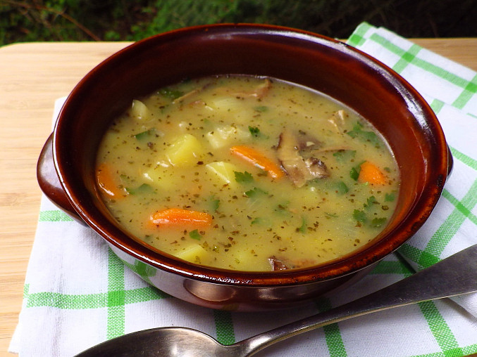

Tradiční česká polévka s bramborami, zeleninou, houbami a voňavou majoránkou. Klasika, která nikdy nezklame.
Z másla a hladké mouky připravíme světlou jíšku. Odstavíme ji stranou a necháme zchladnout.
Oloupeme brambory a nakrájíme je na kostičky. Mrkev, petržel a houby pokrájíme na menší kousky.
Vše vložíme do vývaru, osolíme, přidáme bobkový list a vaříme do změknutí zeleniny.
Přilijeme připravenou jíšku, přidáme prolisovaný česnek a necháme chvíli provařit.
Těsně před koncem vaření přidáme rozemnutou sušenou majoránku a podle chuti dosolíme.